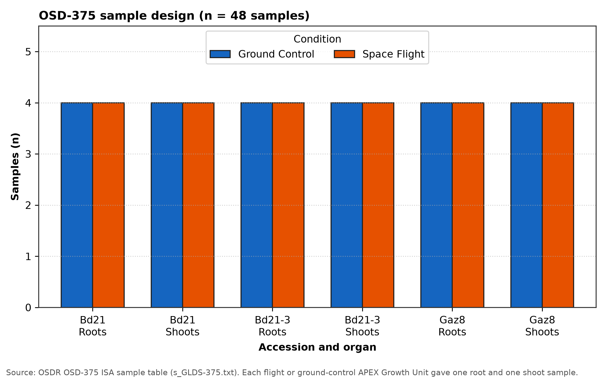
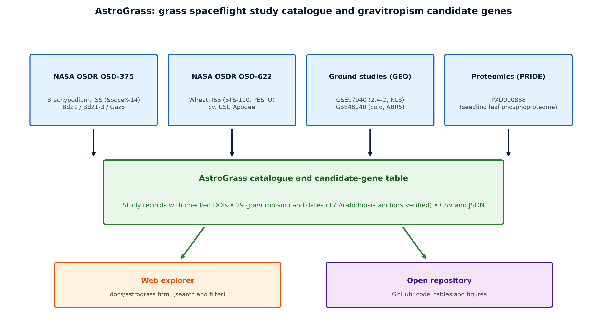
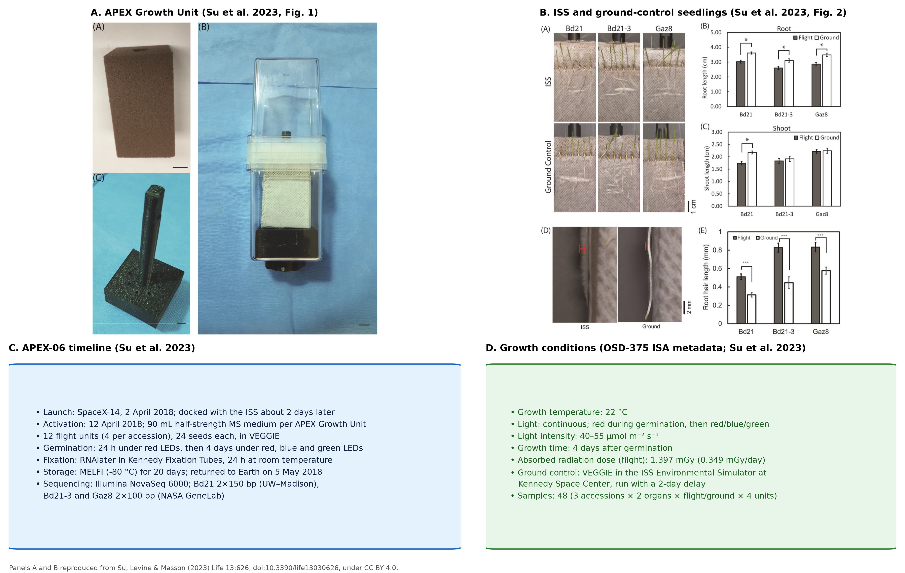

A curated resource built around NASA OSDR study OSD-375, in which seedlings of three Brachypodium accessions were grown on the International Space Station. It collects the study design, a checked catalogue of related grass omics studies, a gravitropism candidate-gene list and time-lapse videos. No new analysis of the spaceflight data has been run yet.
Earlier versions of this site reported a 15-accession gravitropism survey, a genome-wide association study (GWAS), gene-level spaceflight fold changes for OSD-375, a cross-species meta-analysis with Arabidopsis, and synteny, promoter-motif and alternative-splicing results. These have been withdrawn. The gravitropism measurements were generated by the pipeline's demonstration mode from seeded random numbers, no genotype data or association test existed, and the other values were typed into the code rather than computed. The Brachypodium gene identifiers previously listed for the candidate genes were also withdrawn. The Plans page lists what is planned instead.
Few plant spaceflight experiments have used monocots, although monocots include most of the crops grown on Earth. In the APEX-06 experiment, seedlings of the Brachypodium distachyon accessions Bd21, Bd21-3 and Gaz8 were germinated and grown for five days in APEX Growth Units in VEGGIE on the ISS, with a ground control at Kennedy Space Center.
Su et al. (2023) reported that the roots of all three accessions grew more slowly and had longer root hairs in microgravity, and that the number of differentially expressed genes differed widely between accessions: 4,527 in Gaz8, 1,353 in Bd21 and 570 in Bd21-3, with only 47 shoot and 6 root DEGs shared between accessions. Bd21 was sequenced at a different facility and read length from Bd21-3 and Gaz8, so differences between accessions cannot be separated from sequencing batch.
Source: Su, Levine & Masson (2023) Life 13(3):626, doi:10.3390/life13030626.
The OSDR sample table lists 48 RNA-seq samples: three accessions, roots and shoots, flight and ground control, and four APEX Growth Units per accession and condition. Each growth unit gave one root and one shoot sample. Growth conditions, the absorbed radiation dose (1.397 mGy) and the mission timeline are summarised in Figure S1.

The catalogue lists five studies: OSD-375 (Brachypodium, ISS), OSD-622 (dwarf wheat, ISS), two ground RNA-seq studies of Brachypodium (GSE97940, GSE48040) and a leaf phosphoproteome (PXD000868). Each entry was checked against its source record.
The candidate list holds 29 gravitropism genes defined by Arabidopsis anchors: PIN AUX/LAX LAZY/DRO SGR TIR1/AFB ARF/IAA and starch, calcium and cell-wall genes. 17 anchors are verified in UniProt; 12 point to other genes and are marked TODO. Brachypodium gene IDs are still to be mapped.

Time-lapse series of Brachypodium roots of accessions Per1 and BdTR7a after a 90° rotation, from the CyVerse Data Store, can be streamed and downloaded. The Gravitropism page also shows per-accession plots of root orientation and tip displacement over time; the numbers behind those plots are not in this repository.

Click a figure to enlarge it, or download the 300 DPI PNG or the SVG:
An animated drawing of a root bending downwards after a 90° rotation. It illustrates the idea only: the curve is not fitted to measured data. Press Play to run it:
Draft describing the resource as it stands, with the planned analyses listed.
Open PDF on GitHub29 candidates with Arabidopsis anchors and their verification status.
Download CSV@misc{Barker2026_AstroGrass,
author = {Barker, Richard},
title = {AstroGrass: a curated resource for the \textit{Brachypodium distachyon} ISS transcriptome study OSD-375 and gravitropism candidate genes},
year = {2026},
howpublished = {GitHub repository},
url = {https://github.com/dr-richard-barker/brachypodium-gwas-spaceflight}
}
/iplant/home/dr_richard_barker/timelapse_extract/